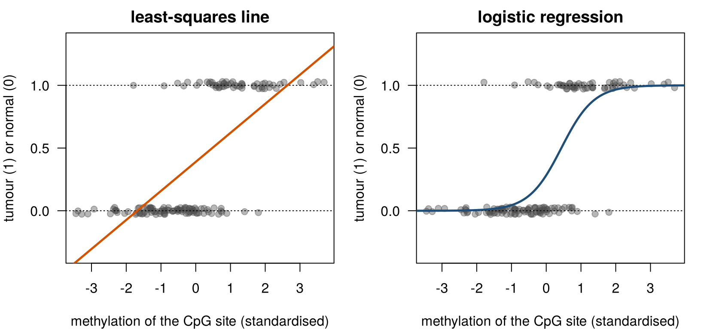
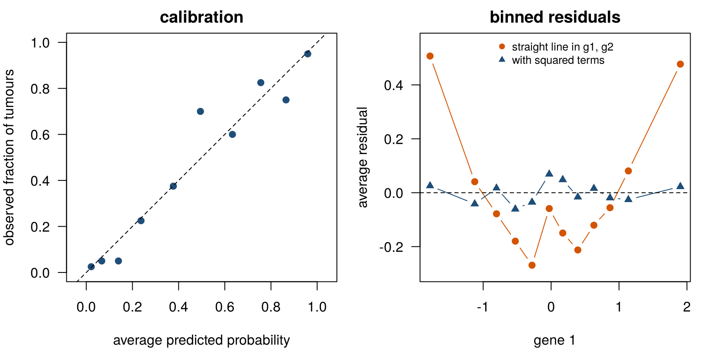

DEF — definition KEY — key idea to remember ↪ — bridge to another day ⚠ — common pitfall
Day 1 ended with a promise: a model for data that are not normal does not have to pretend that they are. It can keep the distribution that generated the data, binomial or Poisson, and model the mean on a suitable scale. Such a model is a generalised linear model (GLM), and Day 5 supplied the tool to fit it: maximum likelihood.
This chapter works out the most important GLM, logistic regression for a binary outcome, in three steps. First as a classical statistical model: what the coefficients mean, how they are tested, and how the fit is checked. Then as a classifier, next to its generative twin, linear discriminant analysis. Finally as the smallest possible neural network, because the models behind modern artificial intelligence are, at their core, logistic regressions on features they learn themselves.
NoteIf time is short
The sections up to and including Checking the fit form the core of the lecture. The folded Going deeper boxes and the comparison with LDA can be read afterwards. The last section, on neural networks, is meant as general knowledge: it is not needed for the rest of the course, but it shows where the ideas of this course reappear.
Why a straight line fails for a binary outcome
Suppose tumour status (1 = tumour, 0 = normal) is to be related to the methylation of one CpG site. Nothing stops us from fitting lm(tumour ~ cpg), and the result even has a meaning: the fitted value estimates the probability of a tumour. But the figure shows two problems.
Code for the figure
set.seed(11)cpg <-rnorm(150, 0, 1.5)tum <-rbinom(150, 1, plogis(-0.3+1.8* cpg))grid <-seq(-4.5, 4.5, length.out =200)f_lm <-lm(tum ~ cpg); f_glm <-glm(tum ~ cpg, family = binomial)par(mfrow =c(1, 2), mar =c(4, 4, 2, 1))for (k in1:2) {plot(cpg, jitter(tum, 0.15), pch =19, col =adjustcolor("grey30", 0.4), las =1,ylim =c(-0.35, 1.35), xlab ="methylation of the CpG site (standardised)",ylab ="tumour (1) or normal (0)",main =c("least-squares line", "logistic regression")[k])abline(h =c(0, 1), lty =3)if (k ==1) abline(f_lm, col ="#D35400", lwd =2.5)elselines(grid, predict(f_glm, data.frame(cpg = grid), type ="response"), col ="#1F4E79", lwd =2.5)}

Figure 8.1: Tumour status (jittered vertically) against the methylation of one CpG site. Left: a straight line, fitted by least squares, predicts probabilities below 0 and above 1. Right: the logistic curve stays between 0 and 1 and follows the data.
The range. A line runs off to \(\pm\infty\), a probability cannot. Here the line predicts “probabilities” below 0 and above 1.
The variance. A 0/1 outcome with probability \(p\) has variance \(p(1-p)\): largest at \(p = 0.5\) and close to zero near 0 and 1. The constant variance that least squares assumes cannot hold.
Both problems are about the residual, the theme of Day 1. A GLM solves them by choosing the right distribution for the response and a transformation that maps the line onto the right range.
CautionCheck yourself
For a 0/1 outcome, what is the largest possible variance, and at which \(p\) is it reached? Why does that rule out the assumption of constant variance whenever the probability changes with \(x\)?
TipAnswer
The variance \(p(1-p)\) is largest at \(p = 0.5\), where it is \(0.25\). If the probability changes with \(x\), say from \(0.1\) to \(0.9\), the variance changes with it, from \(0.09\) to \(0.25\) and back to \(0.09\). The variance is tied to the mean, so it cannot be constant unless the mean is constant too.
The three parts of a GLM
Every GLM is assembled from the same three parts.
A distribution for the response, chosen to match how the data arise: binomial for yes/no or k out of n, Poisson for counts, and so on.
A linear predictor, \(\eta_i = \beta_0 + \beta_1 x_{i1} + \dots + \beta_p x_{ip} = \mathbf{x}_i^\top\boldsymbol\beta\), exactly as in a linear model.
A link function\(g\) that connects the mean of the response to the linear predictor: \(g(\mu_i) = \eta_i\). The link maps the allowed range of the mean (between 0 and 1, or positive) onto the whole real line, where a linear predictor lives.
DEF — A generalised linear model is a response distribution, a linear predictor \(\eta = \mathbf{x}^\top\boldsymbol\beta\), and a link \(g(\mu) = \eta\). The linear model is the special case with a normal distribution and the identity link.
The same machinery therefore covers many kinds of data. In R only the family argument of glm changes.
Response
Distribution
Usual link
Bioinformatics example
continuous, roughly symmetric
normal
identity, \(\mu = \eta\)
log-expression on a microarray
yes/no, or \(k\) out of \(n\)
binomial
logit, \(\ln\frac{\mu}{1-\mu} = \eta\)
tumour or normal; methylated reads out of all reads at a CpG
counts without an upper limit
Poisson
log, \(\ln\mu = \eta\)
mutations per genome; reads per gene
positive, right-skewed, continuous
gamma
log, \(\ln\mu = \eta\)
protein concentration; enzyme activity; survival time of cells
glm(tumour ~ cpg1 + cpg2, family = binomial) # logistic regressionglm(mutations ~ exposure + age, family = poisson) # Poisson regressionglm(concentration ~ treatment, family =Gamma(link ="log")) # gamma regression
With a log link, a coefficient acts multiplicatively on the mean: \(e^{\beta_j}\) is the factor by which the expected count or concentration changes per unit of \(x_j\). The Poisson model ties the variance to the mean (variance = mean); the gamma model ties the standard deviation to the mean (constant coefficient of variation), which suits measurements whose spread grows with their size.
↪ Read counts from RNA-seq vary more than a Poisson distribution allows (overdispersion). DESeq2 and edgeR therefore fit a negative binomial GLM to every gene; MASS::glm.nb does the same for a single response.
The rest of this chapter concentrates on the binomial case. Everything said about fitting, testing and checking carries over to the other families.
CautionCheck yourself
Which family would you choose for (a) the number of colonies on a plate; (b) whether a variant is present in a sample; (c) the fluorescence intensity of a spot, which is always positive and whose spread grows with its mean?
TipAnswer
Poisson, or negative binomial if the counts vary more than their mean; (b) binomial with a logit link; (c) gamma, usually with a log link. A log-transformed normal model is a common alternative for (c), but it models the mean of the log rather than the mean itself.
Logistic regression
The model
A binary outcome has a Bernoulli distribution with probability \(p_i\). The logit link connects it to the linear predictor:
The function on the right, the logistic or sigmoid function, turns any number into a probability.
DEF — \(p/(1-p)\) is the odds. A coefficient \(\beta_j\) is the change in log-odds per unit of \(x_j\), so \(e^{\beta_j}\) is an odds ratio.
As a running example we simulate 400 samples, classified as tumour or normal from the methylation of two CpG sites and one irrelevant site, all standardised.
The estimates can be compared with the true values of \(-0.5\), \(1.5\), \(-1\) and \(0\).
Reading the coefficients
On the log-odds scale the model is linear, so a coefficient is read as in a linear model: one unit more methylation at site 1 raises the log-odds of a tumour by \(\hat\beta_1\). On the odds scale this becomes a multiplication, by the odds ratio\(e^{\hat\beta_1}\). Confidence intervals are computed on the log-odds scale and then transformed.
Each standard deviation of extra methylation at site 1 multiplies the odds of a tumour by about 5; at site 2 it divides them by about 4. The interval for site 3 contains 1, the value for “no effect”.
The effect on the probability is less simple, because the curve is steeper in the middle than at the ends. The slope of the logistic curve is \(\beta\,p(1-p)\), so the same coefficient changes the probability a lot when \(p\) is near 0.5 and hardly at all when \(p\) is near 0 or 1.
Figure 8.2: One unit more of x changes the log-odds by the same amount everywhere, but the probability by different amounts. The arrows show a step of one unit starting from three positions; the change in probability is largest in the middle of the curve.
KEY — The divide-by-four rule: the largest change in probability per unit of \(x_j\) is \(\beta_j/4\), reached where \(p = 0.5\).
CautionCheck yourself
For site 1, \(\hat\beta_1 \approx 1.7\). What is the odds ratio for one unit of methylation, and what is the largest possible change in the probability of a tumour for one unit?
TipAnswer
The odds ratio is \(e^{1.7} \approx 5.3\). By the divide-by-four rule, the largest change in probability is about \(1.7/4 \approx 0.42\), reached for a sample that starts at \(p = 0.5\). For a sample whose probability is already 0.95, the same unit adds less than 0.1.
Fitting by maximum likelihood
Write \(\eta_i = \mathbf{x}_i^\top\boldsymbol\beta\) for the linear predictor. The Bernoulli log-likelihood of Day 5 is
This has the same form as the normal equations of Appendix B, \(\mathbf{X}^\top(\mathbf{y} - \hat{\mathbf{y}}) = \mathbf{0}\): at the maximum, the residuals \(y_i - p_i\) are orthogonal to every predictor. The difference is that \(\mathbf{p}\) depends on \(\boldsymbol\beta\) non-linearly, so the equations cannot be solved in closed form.
Differentiating once more, with \(\partial p_i/\partial\eta_i = p_i(1-p_i)\), gives the matrix of second derivatives, the Hessian:
KEY — The weights \(p_i(1-p_i)\) are positive, so the Hessian is negative definite and the log-likelihood is concave: it has a single maximum, and any method that climbs will find it.
\(\mathbf{X}^\top\mathbf{W}\mathbf{X}\) is the Fisher information of Day 5, now a matrix. Newton’s method approximates \(\ell\) at the current \(\boldsymbol\beta\) by a quadratic with this gradient and curvature, and jumps to the maximum of that quadratic:
X <-cbind(1, dat$cpg1, dat$cpg2, dat$cpg3)y <- dat$tumourb <-rep(0, ncol(X))for (i in1:7) { p <-plogis(drop(X %*% b)) W <- p * (1- p) info <-t(X) %*% (X * W) # Fisher information grad <-t(X) %*% (y - p) # gradient of the log-likelihood b <- b +solve(info, grad)cat(sprintf("iteration %d: log-likelihood %.4f\n", i,sum(y *log(p) + (1- y) *log(1- p))))}
which is the formula for a weighted least-squares regression of \(\mathbf{z}\) on \(\mathbf{X}\). Each Newton step is an ordinary regression with weights and a response that are recomputed from the current fit. The algorithm is therefore called iteratively reweighted least squares (IRLS), and it is what glm runs, for every family. The line “Number of Fisher Scoring iterations” at the foot of a glm summary counts these steps.
NoteGoing deeper: why not plain gradient ascent?
Appendix C introduces gradient descent for least squares. Here it would climb instead: \(\boldsymbol\beta \leftarrow \boldsymbol\beta + \eta\,\mathbf{X}^\top(\mathbf{y} - \mathbf{p})\). Since \(p_i(1-p_i) \le \tfrac14\), the curvature is never larger than \(\lambda_{\max}(\mathbf{X}^\top\mathbf{X})/4\), and a step size of \(\eta = 4/\lambda_{\max}\) is guaranteed to converge.
eta <-4/max(eigen(t(X) %*% X)$values)b_ga <-rep(0, ncol(X))trace_ga <-list()for (i in1:200) { b_ga <- b_ga + eta *drop(t(X) %*% (y -plogis(drop(X %*% b_ga))))if (i %in%c(7, 50, 200)) trace_ga[[paste0("gradient_ascent_", i)]] <- b_ga}out <-rbind(do.call(rbind, trace_ga), newton_7 =drop(b))colnames(out) <-c("intercept", "cpg1", "cpg2", "cpg3")round(out, 3)
Gradient ascent reaches the same answer in the end, but after seven iterations it is still visibly off, where Newton’s method had already converged. Newton’s method uses the curvature to choose both the direction and the length of each step. Its price is solving a \(p \times p\) linear system per step, which is why very large models, such as neural networks, are trained by gradient methods after all.
⚠ If a predictor separates the two classes perfectly, the likelihood keeps rising as \(\beta \to \infty\) and glm warns that fitted probabilities of 0 or 1 occurred. With more genes than samples this is almost guaranteed. Day 9 provides the remedy.
Testing and checking
Deviance and the likelihood-ratio test
A GLM has no residual sum of squares. Its place is taken by the deviance, twice the gap in log-likelihood between the fitted model and a saturated model that fits every observation perfectly. For 0/1 data the saturated log-likelihood is zero, so the deviance is simply \(-2\ell(\hat{\boldsymbol\beta})\). A glm summary reports two deviances: the null deviance of a model with only an intercept, and the residual deviance of the fitted model.
↪ AIC is the residual deviance plus \(2k\): here \(352.2 + 2 \times 4\). The deviance plays the role of the training error, and Day 5’s correction for optimism is added to it.
Two nested models are compared by the drop in deviance. If the smaller model is true, the drop has approximately a \(\chi^2\) distribution with as many degrees of freedom as parameters were removed. This is the likelihood-ratio test, the GLM counterpart of the F-test for linear models.
fit_without_cpg3 <-glm(tumour ~ cpg1 + cpg2, data = dat, family = binomial)anova(fit_without_cpg3, fit_glm, test ="Chisq")
Removing site 3 raises the deviance by only 0.13 (\(p = 0.72\)), so the data give no reason to keep it. The z-test in the summary table (the Wald test) gives almost the same p-value here; with small samples or large effects the likelihood-ratio test is the more reliable of the two.
Checking the fit
The residuals \(y_i - \hat p_i\) of a logistic regression take only two values for each fitted probability, so a plot of residuals against fitted values shows two bands and little else. Two plots are more informative. Both work by grouping the samples, so that averages replace single 0s and 1s.
A calibration plot groups the samples by predicted probability and compares the average prediction with the observed fraction of tumours in each group. A well-calibrated model lies on the diagonal.
A binned residual plot groups the samples by one predictor and plots the average residual. A systematic pattern means that the model has the wrong shape in that predictor.
The second plot is shown on new data. In this example disease is more likely when a gene is either too high or too low, a U-shaped risk, while the model assumes a straight line on the log-odds scale.
Code for the figure
calib <-function(p, y, k =10) { g <-cut(p, quantile(p, 0:k / k), include.lowest =TRUE)cbind(predicted =tapply(p, g, mean), observed =tapply(y, g, mean))}binned_resid <-function(x, r, k =12) { g <-cut(x, quantile(x, 0:k / k), include.lowest =TRUE)cbind(x =tapply(x, g, mean), r =tapply(r, g, mean))}set.seed(7)make_u <-function(n) { g1 <-rnorm(n); g2 <-rnorm(n)data.frame(g1, g2, disease =rbinom(n, 1, plogis(-3+1.5* (g1^2+ g2^2))))}u_train <-make_u(400)u_lin <-glm(disease ~ g1 + g2, data = u_train, family = binomial)u_sq <-glm(disease ~ g1 + g2 +I(g1^2) +I(g2^2), data = u_train, family = binomial)par(mfrow =c(1, 2), mar =c(4, 4, 2, 1))cb <-calib(fitted(fit_glm), dat$tumour)plot(cb, pch =19, col ="#1F4E79", xlim =c(0, 1), ylim =c(0, 1), asp =1, las =1,xlab ="average predicted probability", ylab ="observed fraction of tumours",main ="calibration")abline(0, 1, lty =2)br1 <-binned_resid(u_train$g1, residuals(u_lin, type ="response"))br2 <-binned_resid(u_train$g1, residuals(u_sq, type ="response"))plot(br1, type ="b", pch =19, col ="#D35400", ylim =range(br1[, "r"], br2[, "r"]) *1.1, las =1,xlab ="gene 1", ylab ="average residual", main ="binned residuals")lines(br2, type ="b", pch =17, col ="#1F4E79"); abline(h =0, lty =2)legend("top", bty ="n", cex =0.8, pch =c(19, 17), col =c("#D35400", "#1F4E79"),legend =c("straight line in g1, g2", "with squared terms"))

Figure 8.3: Left: calibration of the CpG model. Samples are grouped into ten groups by predicted probability; the observed fraction of tumours follows the diagonal. Right: binned residuals against gene 1 for a disease whose risk rises when the gene is too high or too low. The straight-line model (orange) leaves a U-shaped pattern in its residuals; adding squared terms (blue) removes it.
KEY — “Take the residuals seriously” (Day 1) holds for GLMs too. Grouping turns uninformative 0/1 residuals into averages that show whether the model has the right shape.
CautionCheck yourself
A colleague removes a predictor because its Wald p-value is 0.08, and then reports that the remaining model “fits well” because its residual deviance is smaller than that of the null model. What is wrong with each step?
TipAnswer
A p-value of 0.08 says that the data cannot rule out a zero coefficient, not that the coefficient is zero; whether to keep the predictor depends on the purpose of the model. And any model with predictors has a smaller deviance than the null model, just as any regression has a smaller RSS than the mean alone. A drop in deviance must be judged against its degrees of freedom (the likelihood-ratio test), and the fit must be checked with calibration and residual plots.
The generative alternative: linear discriminant analysis
Logistic regression models \(P(y \mid \mathbf{x})\) directly, and it is therefore called discriminative. Linear discriminant analysis (LDA) is generative: it models how the measurements \(\mathbf{x}\) are distributed within each class, \(\mathbf{x} \sim N(\boldsymbol\mu_k, \boldsymbol\Sigma)\) with a covariance matrix shared by the classes, and obtains the class probabilities from Bayes’ theorem. Measured with the ruler \(\boldsymbol\Sigma^{-1}\) (the Mahalanobis distance of Appendix B), LDA assigns a sample to the nearest class mean, adjusted for how common each class is. The resulting posterior has exactly the logistic form, so both methods give a linear boundary.
Here the two methods agree almost completely, because the predictors are indeed normal. With skewed predictors, outliers or binary predictors, logistic regression is the safer choice.
From logistic regression to neural networks
Logistic regression is also the building block of the neural networks behind modern artificial intelligence. This section shows the connection; it is general knowledge rather than course material.
One neuron is a logistic regression
An artificial neuron takes inputs \(x_1, \dots, x_p\), forms a weighted sum plus a constant, and passes the result through an activation function. With the sigmoid as activation, that is exactly the logistic model.
Figure 8.4: A single artificial neuron. The inputs are multiplied by weights and summed with a bias; the sigmoid turns the sum into a probability. In statistical terms: predictors, coefficients, intercept, inverse link.
The vocabulary differs between the two fields, but the objects are the same:
Statistics
Machine learning
predictor \(x_j\)
input, feature
coefficient \(\beta_j\)
weight \(w_j\)
intercept \(\beta_0\)
bias \(b\)
inverse link (logistic function)
activation (sigmoid)
negative log-likelihood (Day 5)
cross-entropy loss, log-loss
maximum likelihood by Newton/IRLS
training by (stochastic) gradient descent
ridge penalty (Day 9)
weight decay
multinomial logistic regression
softmax output layer
A network learns its own features
Logistic regression draws straight boundaries on the log-odds scale. The U-shaped risk of the previous section defeats it, unless someone thinks of adding squared terms. A neural network with a hidden layer of neurons first computes new features, each a logistic regression on the inputs, and then fits a logistic regression on those features. The features are not chosen by the analyst; they are learned from the data by maximising the same likelihood.
R comes with the package nnet, which fits networks with one hidden layer. Below, a network with four hidden neurons is compared with the two logistic regressions, on 2,000 new samples.
Figure 8.5: Predicted probability of disease (darker shading: higher) and the 0.5 boundary (black) for the three models, with the training samples (orange: disease, grey: healthy). The straight-line model can only draw a straight boundary. The model with squared terms draws the circle because it was told to. The network finds a similar boundary by itself.
The straight-line model is no better than always predicting “healthy”. The network reaches the same accuracy as the model with the right squared terms, and both come close to the true probabilities. Deep networks stack many such hidden layers, so that later layers build features from the features of earlier ones.
↪ The weights of all layers are found by gradient descent on the negative log-likelihood. Computing the gradient through the layers is the chain rule, applied as in the derivation of the logistic gradient above; in this context it is called backpropagation.
Many classes: softmax, and how language models are trained
With \(K\) classes, logistic regression becomes multinomial logistic or softmax regression: each class \(k\) gets its own linear predictor \(\eta_k\), and
For \(K = 2\) this is the logistic function again. A classification network ends in exactly such a softmax layer, and it is trained by maximising the multinomial log-likelihood, which machine learning calls minimising the cross-entropy. A large language model is, in this respect, no different: at each position in a text it predicts the next word (more precisely, the next token) with a softmax over a vocabulary of many thousands of tokens, and it is trained by maximum likelihood on enormous amounts of text. Its billions of parameters are fitted by stochastic gradient descent, because Newton’s method would need a Hessian with billions of rows.
What is gained and what is lost
A neural network gains flexibility: it finds features that nobody specified. It pays for that in three ways that this course has made visible.
No inference. There are no odds ratios with confidence intervals and no likelihood-ratio tests. The weights of a hidden layer have no meaning of their own.
More data. Flexibility is variance. Day 5 showed that a log-likelihood on the training data is optimistic, and the more parameters a model has, the more data it needs to keep that optimism in check.
Only prediction. In the terms of Day 2, logistic regression lives in two worlds: it can test a hypothesis (confirmatory) and it can predict (predictive). A neural network lives only in the second. Its quality is its error on new data, measured by the resampling methods of Day 7.
⚠ A penalised fit is not maximum likelihood. Some software, including scikit-learn’s LogisticRegression in Python, adds a ridge penalty (weight decay) by default. Its coefficients and standard errors must not be read as those of glm.
CautionCheck yourself
A network for classifying tumour types from expression profiles has one hidden layer of 50 neurons and a softmax output layer for 5 tumour types. Which part of the network is a multinomial logistic regression, and what plays the role of its predictors?
TipAnswer
The output layer is a multinomial logistic regression with 5 classes. Its predictors are not the genes, but the 50 values computed by the hidden layer: features that the network learned from the genes. Training fits the hidden layer and the logistic regression together, by maximising the multinomial log-likelihood.
Summary
A GLM consists of a distribution for the response, a linear predictor and a link function. The linear model is the special case with a normal distribution and the identity link; logistic (binomial), Poisson and gamma regression are others.
In logistic regression a coefficient is a change in log-odds; \(e^{\beta}\) is an odds ratio. The effect on the probability depends on where one starts, and is at most \(\beta/4\).
The model is fitted by maximum likelihood, with Newton’s method in the form of iteratively reweighted least squares. The log-likelihood is concave, so the maximum is unique, unless the classes are perfectly separated.
The deviance replaces the residual sum of squares. Nested models are compared by the likelihood-ratio test; the fit is checked with calibration and binned residual plots.
LDA reaches a linear boundary from the other direction, by modelling \(\mathbf{x}\) within each class.
A neuron is a logistic regression; a neural network is a logistic regression on learned features, trained by gradient descent on the same likelihood. It gains flexibility and loses inference.